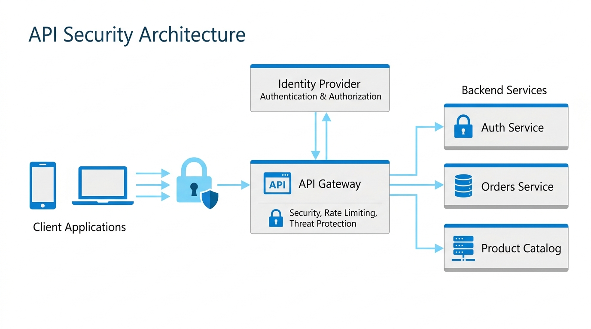

Безопасность при работе с API
Современные веб-приложения строятся на распределённой архитектуре, в которой клиентская часть активно взаимодействует с внутренними и внешними серверными интерфейсами. В такой среде безопасность API становится ключевым приоритетом разработки. Незащищённый программный интерфейс открывает злоумышленникам прямой доступ к конфиденциальным данным пользователей, бизнес-логике и внутренним базам данных компании, минуя графический интерфейс сайта.

API-ключи и токены аутентификации
API-ключ (API Key) - это уникальная алфавитно-цифровая строка, которая передаётся клиентом серверу для идентификации вызывающего приложения или проекта. Главная задача API-ключа заключается в аутентификации приложения, учёте квот использования сервиса и сборе аналитики. Однако сам по себе API-ключ не должен использоваться для авторизации конкретного пользователя, так как он удостоверяет лишь систему или проект целиком, а не личность конечного пользователя.
Для разграничения прав пользователей применяются токены доступа (Access Tokens), среди которых наибольшую популярность приобрёл стандарт JWT (JSON Web Token). Токен состоит из трёх частей (заголовок, полезная нагрузка и цифровая подпись) и обычно передаётся в HTTP-заголовке запроса Authorization: Bearer <token>. В отличие от постоянных статических ключей, токены имеют ограниченное время жизни (TTL), что существенно снижает ущерб в случае их перехвата.
Протокол авторизации OAuth 2.0
OAuth 2.0 - это открытый отраслевой протокол авторизации, позволяющий пользователю предоставить одному приложению ограниченный доступ к своим ресурсам на другом сервере без передачи пароля. Типичный пример в веб-разработке - вход на сайт с помощью учётной записи Google, GitHub или VK («Социальная авторизация»).
В рамках спецификации OAuth 2.0 выделяют четыре ключевые роли: Resource Owner (пользователь, владеющий данными), Client (стороннее веб-приложение), Authorization Server (сервер авторизации) и Resource Server (сервер, хранящий защищённые ресурсы). Самым надёжным сценарием для веб-приложений является поток Authorization Code Flow (в связке с расширением PKCE для фронтенд-клиентов), при котором клиент получает временный код авторизации и обменивает его на кратковременный Access Token и долговременный Refresh Token через защищённый серверный канал.
Политика CORS и безопасность в браузере
CORS (Cross-Origin Resource Sharing) - механизм безопасности современных веб-браузеров, расширяющий базовую политику одного источника (Same-Origin Policy, SOP). По умолчанию браузер блокирует асинхронные HTTP-запросы (Fetch или XMLHttpRequest), отправляемые с одного домена (origin: протокол + хост + порт) на совершенно другой, предотвращая кражу данных вредоносными скриптами.
Для разрешения легитимных междоменных запросов сервер должен явно отправлять специальные HTTP-заголовки ответа, такие как Access-Control-Allow-Origin, Access-Control-Allow-Methods и Access-Control-Allow-Headers. Для небезопасных запросов (например, методов PUT, DELETE или запросов с нестандартными заголовками) браузер сначала отправляет предварительный проверочный запрос (Preflight request) методом OPTIONS. Неправильная конфигурация, например указание подстановочного символа * вместе с передачей куки и учётных данных, создаёт серьёзную уязвимость.
Ограничение частоты запросов (Rate Limiting)
Rate Limiting (ограничение частоты запросов) - критически важная защитная мера, регламентирующая максимальное количество обращений к API за определённый временной промежуток (например, не более 100 запросов в минуту от одного IP-адреса или токена). Ограничение защищает серверную инфраструктуру от перегрузок, DoS/DDoS-атак, перебора паролей (brute force) и несанкционированного парсинга данных скрейперами.
В современных архитектурах часто применяются алгоритмы «корзины токенов» (Token Bucket) или «скользящего окна» (Sliding Window). При превышении лимита сервер возвращает клиенту стандартный HTTP-статус 429 Too Many Requests вместе с информационными заголовками X-RateLimit-Limit, X-RateLimit-Remaining и Retry-After, сообщающими, сколько времени клиенту необходимо подождать до возобновления приёма запросов.
Лучшие практики обеспечения безопасности API
Для построения отказоустойчивых и защищённых интерфейсов разработчикам рекомендуется следовать комплексным принципам безопасности:
- Обязательное шифрование трафика (HTTPS / TLS 1.3): Все данные, включая заголовки авторизации и тела запросов, должны передаваться исключительно по защищённому протоколу, исключающему перехват типа «человек посередине» (MitM).
- Строгая валидация и очистка входящих данных: Никогда не доверяйте входящим параметрам от клиента; проверяйте типы, формат, длину и экранируйте спецсимволы для защиты от SQL/NoSQL инъекций и XSS.
- Принцип наименьших привилегий (Least Privilege): Выдавайте токенам и API-ключам минимально необходимый набор разрешений (scopes), достаточный только для выполнения конкретной функции.
- Безопасное хранение секретов: Храните ключи в переменных окружения (Environment Variables) или специализированных хранилищах (HashiCorp Vault, AWS Secrets Manager), никогда не коммитьте их в Git.
- Маскирование системных ошибок: Не отдавайте клиентам стектрейсы и детали внутренних баз данных; клиенту достаточно понятного кода ошибки (RFC 7807 Problem Details), а подробности фиксируйте во внутреннем журнале.
- Регулярная ротация и механизм отзыва ключей: Автоматизируйте процедуру периодической смены секретов и внедряйте возможность мгновенного аннулирования скомпрометированных токенов (Revocation List).
- Централизованный аудит и мониторинг аномалий: Отслеживайте всплески трафика, ошибки авторизации 401/403 и подозрительные паттерны обращений для превентивного реагирования на инциденты.
Важное правило безопасности: Никогда не храните секретные API-ключи, приватные токены и сертификаты в клиентском коде JavaScript или публичных репозиториях. Любой код, выполняющийся в браузере пользователя, доступен для инспекции через инструменты разработчика (DevTools). Для работы со сторонними сервисами всегда используйте промежуточный бэкенд (Backend for Frontend, BFF), скрывающий секретные ключи на защищённом сервере.